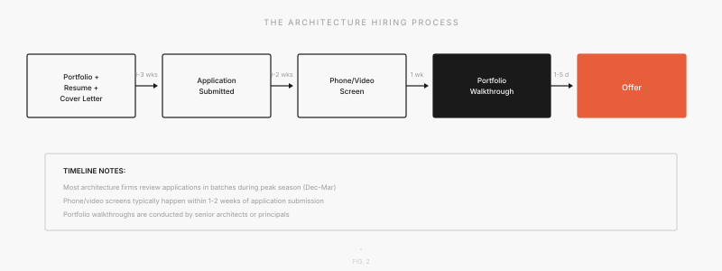
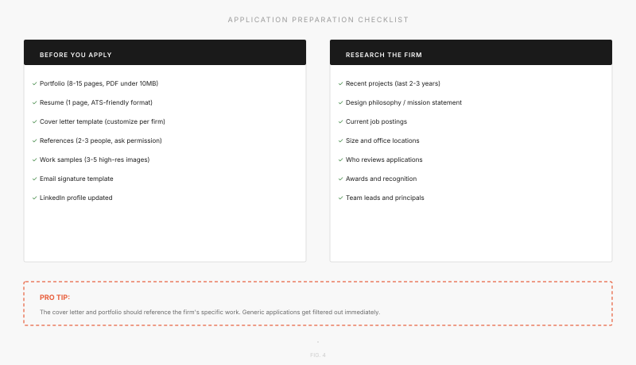

Application Timeline: When and How to Apply to Architecture Firms
Why Timing Matters in Architecture Hiring
Architecture hiring is different from tech or finance. There is no universal recruiting season, no on-campus interviews with pre-scheduled time slots, and no standardized internship programs running in parallel at every firm. Instead, hiring happens in waves, driven by project pipelines, departures, and firm growth. Most students apply too late or with generic materials, missing the critical window when firms are actively reviewing applications.
Large firms (Gensler, HOK, Perkins&Will, SOM) start recruiting early, often in October, because they need to fill multiple positions and run structured processes. Mid-size firms peak between January and March. Boutique studios hire year-round based on project workload. The timeline in this guide reflects patterns across hundreds of firms, but individual timelines vary widely.
KEY INSIGHT: A firm of 12 people hires very differently than a firm of 1,200. The timeline in this guide reflects patterns across hundreds of firms, but individual timelines vary widely. That is why large firms recruit early (September–November) while boutiques hire based on project demand. Start your applications early and stay persistent.

The Architecture Hiring Year: Month by Month
September–November: Research & Prepare
The hiring calendar starts here. Career fairs happen at schools across the country. Attend even if you feel unprepared. You'll meet alumni, hear directly from firms, and get a sense of what firms are looking for. Large firms like Gensler, HOK, Perkins&Will, and SOM begin posting internship positions. Use this time to finalize your portfolio, update your resume to highlight relevant skills, and research 15–20 target firms in depth. Start reaching out to alumni at those firms on LinkedIn or through your school's alumni network. A warm introduction goes a long way.
December–February: Peak Application Season
The critical window opens here. Have your materials ready by December. Large and mid-size firms are actively reviewing applications, scheduling phone screens, and conducting portfolio walkthroughs. On-campus interviews begin at target schools (typically January–March). The numbers matter here: apply to 20–30 firms minimum. Architecture hiring is a numbers game. Even with a strong portfolio, rejection rates are high simply because there are far more applicants than positions.
COMMON MISTAKE: Waiting until February to start your portfolio. By then, firms have been reviewing applications for 2–3 months. Early applications get fresh eyes; late applications get tired ones.
March–April: Offers & Late Opportunities
Large firm offers typically go out in March and April. Mid-size firms are still actively interviewing. Smaller firms and landscape firms are just beginning to hire for summer. If you haven't heard back from firms you applied to in December, now is the time to follow up politely. Many firms lose track of applications or want a gentle reminder that you are still interested.
May–August: Internship Season & Full-Time Rolling Hiring
Summer internships typically run from mid-May to mid-August. This is when you start your internship and build relationships with your team. Boutique firms continue to hire year-round based on project workload. Recent graduates can and do find full-time positions throughout the summer and into the fall, so do not assume the job search ends in April.
How the Hiring Process Actually Works
Most hiring follows a predictable sequence: you submit materials, the firm reviews your application, they may call you for a phone or video screen, you present your portfolio, and if all goes well, you receive an offer. Each step has a different purpose and requires different preparation.

Step 1: Application Review (1–3 weeks)
Your portfolio is the first thing they look at. Then your cover letter. Your resume comes last. Firms spend 5–10 minutes on your initial review. During that time, they want to understand two things: Can this person design? Do they understand our firm? If the answer to both is yes, you move forward.
Step 2: Phone or Video Screen (15–30 minutes)
This is a short conversation to assess your communication skills and enthusiasm. They will ask you about a project in your portfolio and listen to how you talk about it. Practice walking through 2–3 of your projects before any interviews. Know the story of each piece: the problem you were solving, the decisions you made, and what you learned.
Step 3: Portfolio Walkthrough (30–60 minutes)
This is the real interview. You present your portfolio to principals, designers, or project managers. They will ask about your process, the decisions you made, constraints you faced, and what you would do differently now. This is your chance to demonstrate that you can think critically about design and articulate your reasoning clearly. They care less about the final result and more about how you approach problems.
Step 4: Offer
Usually verbal first, then written. You typically have 1–2 weeks to decide. It is okay to ask for time. It is also okay to ask clarifying questions about compensation, start date, or the scope of work. Firms expect negotiation on some level. Do not feel pressured to accept immediately; most firms understand that you may be waiting to hear from other firms or need time to process the decision. You can ask follow-up questions about the role, the team you'll work with, or any other details that matter to you. For a detailed look at compensation, benefits, and what to negotiate, see Section 7, which covers these topics in detail.
KEY INSIGHT: The portfolio walkthrough IS the interview. Unlike corporate jobs, there is rarely a behavioral interview or case study. Your ability to narrate your design process clearly and confidently is what determines the outcome.
Hiring Differences by Firm Size

Large Firms (100+ employees)
These firms run the most structured hiring processes. They have dedicated HR or Talent teams, post openings on their website and job boards, conduct on-campus recruiting at target schools, and run standardized interview rounds. Compensation is competitive with benefits, mentorship programs, and clear paths to licensure support. Examples include Gensler, HOK, SOM, and Perkins&Will. If you apply early (September–November), you have the best chance of standing out.
Mid-Size Firms (20–99 employees)
Hiring is moderate in structure. A principal or senior designer reviews your portfolio . There is no HR filter. They typically hire between January and April. There is more room for personality and cultural fit in your application than at large firms. These firms are often the sweet spot for mentorship because you will work closely with experienced designers who have time to teach you.
Boutique Studios (<20 employees)
The founder or a partner probably reviews your portfolio personally. Hiring often happens when a new project comes in, so there may not be a posted opening. Cold emails work here. They might not advertise on job boards. Cultural fit matters enormously; you are not just being evaluated on your design skills but on whether you will mesh with the small team. Timeline: year-round, but peaks in spring.
Landscape Architecture Firms
Seasonal hiring peaks in spring as field season approaches. Firms want to see plant knowledge and site design skills alongside digital competency. Many landscape architecture firms also value construction documentation experience. If you have experience with grading plans, planting specifications, or site surveying, highlight it. Timeline: heaviest hiring February–April.
What to Prepare Before You Apply

Portfolio
8–15 pages, PDF under 10 MB. Lead with your strongest project. Show process, not just final renders. Every spread should have a purpose. Include site plans, sections, details, and design development sketches. Show that you understand how buildings are built. Customize the portfolio order for each firm. A healthcare-focused firm wants to see your healthcare project; a residential boutique does not care about your civic center.
Resume
One page. ATS-friendly format: no columns, no graphics in the header. List software skills prominently (Rhino, Revit, Grasshopper, Adobe Suite, etc.). Quantify where possible ("managed budget of $150k," "coordinated with 5 subconsultants," "presented to 200+ attendees"). Include summer experiences, competitions, and studio work. Firms want to see depth in your most relevant experiences, not a long list of every job you ever had. For detailed resume guidance, see our Resume Guide.
Cover Letter
Customize the first paragraph for every firm. Reference a specific project or value of theirs. Explain why you want to work there, not just that you do. For detailed guidance, see our Cover Letter Guide.
References
2–3 people who can speak to your work quality and character. Ask permission first. Brief them on which firms you are applying to so their recommendations feel tailored.
Work Samples
Some firms ask for 3–5 high-resolution images separately from the portfolio. Have those ready. Organize them by project with clear captions.
PRO TIP: Create a master portfolio of 20–25 pages, then customize a shorter version for each firm type. A healthcare-focused firm wants to see your healthcare studio project; a residential boutique does not. Spend the time upfront to tailor. It will pay off.
The Cold Email Strategy
Most boutique firms do not post openings publicly. You have to reach out directly. A cold email is often your only way in.
The Structure of an Effective Cold Email
Keep it to 3–4 sentences in the first paragraph:
- Sentence 1: What drew you to their work (be specific. Name a project or initiative)
- Sentence 2: What you bring (1–2 relevant skills or experiences)
- Sentence 3: The ask (informational chat, not demanding a job)
- Attachment: Resume + 3–5 portfolio images (not the full PDF)
Timing Matters
Send cold emails Tuesday through Thursday mornings. Avoid Mondays (overflowing inboxes) and Fridays (people are checking out). Send between 8 AM and 11 AM. This increases the chance someone actually reads it.
Follow-Up
Follow up once after 7–10 days if you do not hear back. If there is still no response after two attempts, move on. Do not become a pest.
KEY INSIGHT: Response rates for cold emails in architecture are low. Expect roughly 5–15% based on industry anecdotes. That means for every 20 emails you send, you might get 1–3 conversations. That is normal, and not a reflection of your work. It is the reality of a small industry with limited hiring capacity. Volume and persistence matter.
After the Offer: What to Expect
Compensation
Entry-level salaries in architecture range from $50,000 to $72,000, depending on city, firm size, and degree level. Research current ranges on Archinect salary polls or the AIA compensation survey. Major metros (New York, San Francisco, Los Angeles) pay more but have higher cost of living. Start-up boutiques may pay on the lower end; large established firms on the higher end.
Benefits to Ask About
- Health insurance (does it start immediately or after 90 days?)
- Licensure support (who pays for ARE (Architect Registration Examination) exam fees? Study time?)
- Professional development budget (conferences, workshops, software subscriptions?)
- Mentorship programs (will you be paired with someone?)
- Overtime policy (is there a clear definition, or is it expected?)
Negotiation
You should ask. Frame it as: "Is there flexibility in the compensation?" Many firms will negotiate $2,000–$5,000 for strong candidates. Do not hesitate. It is expected.
Start Date
Most firms are flexible by 2–4 weeks. It is okay to ask for time between graduation and starting. They understand you may have other commitments or want a brief break.
Red Flags
Be cautious if a firm offers no clear overtime policy, gives a vague job description, offers an unusually low salary without explanation, or provides no benefits for a full-time position. These are signs of potential culture or financial issues.
Quick Reference: Timeline Cheat Sheet
| How to Apply | Key Actions | Status |
|---|---|---|
| Sep–Nov | Research firms, attend career fairs, finalize portfolio, reach out to alumni | Start here |
| Dec–Feb | Apply to 20–30 firms, customize cover letters, attend on-campus interviews | Critical window |
| Mar–Apr | Interview, follow up with firms, negotiate and accept offers | Decision time |
| May–Aug | Start internship, build relationships, continue networking | Execution |
| Year-round | Cold email boutique firms, update portfolio, refine materials | Always be ready |
The Final Word
The architecture job search rewards persistence, specificity, and genuine interest. Firms want to hire people who understand their work and can contribute to their culture. Show them that, and the timeline takes care of itself. You do not need to be perfect. You need to be focused, prepared, and consistent.
Ready to start your search? Explore 2,000+ firms on our Firm Search map. And for guidance on crafting your application materials, see our Cover Letter Guide and Portfolio Guide.